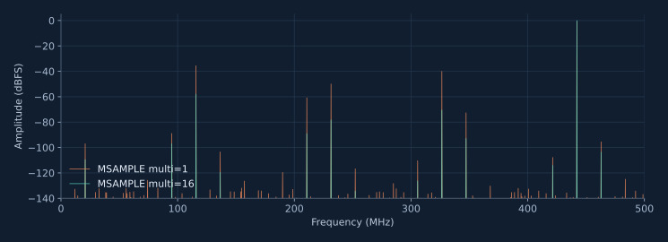

完整产品宣传片 · DIRECTOR'S CUT
SpiceOwl 完整工作流实战：你去休息，仿真我盯
开篇愿景插页 + 10 节全流程真实操作（含痛点/方案/效率对比页与第 09 节双转折强调页）+ 结尾愿景页，全程 1600×812 HD 流畅衔接。
点击封面即可立即流式播放；也可在下方任意章节卡片中单独播放或切入顶部大屏。
SPICEOWL · YOU SLEEP. SPICEOWL KEEPS WATCH.
SpiceOwl 是专为模拟 / 混合信号 IC 工程师打造的开源 Agent 仿真工作台。浏览器即唯一入口，30 秒打通本机 Connector 与远端 EDA 集群——无需守在卡顿的 Virtuoso GUI 前点鼠标，把算力与 License 巡检、零交互许可导网表、一句话批量仿真、交互式工程报告与可进化的夜间值守，统一交给有证据、守红线的 AI 工具链。
自然语言下发仿真与分析目标
三级权限（安全托管 / 满血受控 / 满血全权）
内置 5 大高频 Skill 一键提效
首次双击安装无界面本机 Connector（127.0.0.1:8765），之后全程在浏览器完成所有操作；密钥、密码、原始网表与 PSF 数据全程保留在本机与内网集群。
PRODUCT LAUNCH FILM & 10-CHAPTER WALKTHROUGH
完整宣传片与 10 节独立分章实录均配自然 AI 语音解说、原创环境配乐与痛点/方案/效率导读卡片。点击封面即可在页面内流式播放高清视频（初始打开页面不消耗视频流量）。
开篇愿景插页 + 10 节全流程真实操作（含痛点/方案/效率对比页与第 09 节双转折强调页）+ 结尾愿景页，全程 1600×812 HD 流畅衔接。
告别配 Python、装依赖与多端切换：双击一次安装无界面 Connector，网页 127.0.0.1 静默配对，同时接管本机 Agent。
告别手写 SSH Config 与反复输密码：自动识别旧版跳板机 RSA 兼容，新增节点自动复用跳板机与账号，密码绝不落盘。
无需逐台 SSH 敲 top 和 lmstat：512 核负载、活跃 Spectre 进程与 3 台 FlexLM 许可席位一屏聚合，自动推荐空闲主机。
彻底脱离卡顿 Virtuoso GUI：用大白话报出电路关键词，AI 自动跨目录模糊检索并隔离导出原理图网表与 Maestro 配置。
习惯亲手选库？浏览器直连远端目录自动解析 cds.lib、标注 schematic/maestro，隔离导出且绝不修改原始设计文件。
一句话提交多温度扫描：自动拆分任务分组提交、4 秒自动巡检、收齐波形并推送 AI 出报，中途可随时切走处理别的工作。
半小时截波形贴 PPT 缩至 1 分钟：单点 KPI、可缩放矢量波形与多温度 TB 综合横评一步到位，102 KB 离线 HTML 发给同事双击即看。
想要专属分析？一句话让 AI 现写统一口径的 PSF 测量脚本，算出增益、±0.1% 建立时间、10–90% 上升时间与 VDD 功耗曲线并回写报告。
透明可控的 Code-First 值守引擎：支持一键启停与自然语言修改 night_watch.py，每次改动先经独立沙箱 Dry-Run 验真。
最怕 AI 瞎改网表造假数据：遇到未覆盖的 STB probe 缺失，AI 严守红线留证待审；一句授权后即沉淀为永久 Python 规则并自动恢复出报，跳过项诚实标为 Skipped / Unverified。
WEB-FIRST WORKBENCH & AGENT SKILLS
不再要求日常敲命令行，也不为每种模拟电路写死僵硬向导。Web 工作台、三级权限控制与 5 大内置 Skill 让 Agent 既干活利落，又全程可审计。
spiceowl-quick-ops
spiceowl-sim-submit
spiceowl-sim-report-fast
spiceowl-sim-report
spiceowl-night-watch
Skill 将高频工程流程沉淀为 1-SSH 极速提交、单调用更新值守配置与双模式报告规范，减少多轮试探，显著提升 Agent 稳定性与响应速度。
“帮我打开远端库里的运算放大器测试台，在 -40°C / 27°C / 125°C 下跑瞬态扫描，跑完做一份增益、±0.1% 建立时间和 VDD 功耗随温度变化的曲线报告。”
调用算力推荐挑出最空闲节点，跨目录模糊定位 cds.lib 与 Maestro 视图；通过只读隔离流程导出网表与激励，绝不占用 ADE 交互许可。
按 1-SSH 规范冻结 SHA-256 输入并分组派发至远端 Spectre；每 4 秒自动巡检状态，遇排队超时或 OOM 交由 night_watch.py 有界处理。
收齐全部原生 PSF 后自动生成交互式单点报告与 TB 综合横评；在自由创作模式下编写统一口径测量脚本绘制工程趋势曲线，并导出 102 KB 独立离线 HTML。
双击安装一次：Install SpiceOwl Connector.command / .bat 浏览器打开：https://spiceowl-dev.github.io/spiceowl/ 点击右上角「连接本机」→ 127.0.0.1:8765 静默配对
原生支持 macOS / Linux / Windows（无需 WSL），免管理员权限注册 spiceowl:// 协议。直接经已登记的 OpenSSH 主机执行 ssh_direct / lsf / slurm 远端 Spectre 与 ngspice 仿真，无需额外部署中转网关。
SSH WIZARD · CLUSTER COMPUTE · FLEXLM LICENSES
可视化向导 1 分钟纳管整套跳板机与计算集群，并行探测 CPU、内存、活跃 EDA 进程与 FlexLM SPICE 许可池，用新鲜快照替你与 Agent 选出最空闲主机。
92 / 128 GiB 内存可用
10 秒前采样 · 版本可用
90 / 128 GiB 内存可用
10 秒前采样 · 版本可用
100 / 128 GiB 内存可用
180 秒前采样 · 已过新鲜度限制
当前请求能保留规定余量；改变内存需求，观察为什么“看起来有空”的服务器也会被排除。
针对高校与企业常见的多级 ProxyJump 跳板机与旧版 OpenSSH 环境，可视化向导自动检测并启用 ssh-rsa 兼容，本机托管免密密钥且密码绝不落盘；添加第 2、3 台集群节点时自动复用跳板机与账号，并完成 5 项全绿连通校验。
原生兼容远端 csh / tcsh、旧版 Python 2.7 以及自动扫描定位 Spectre 安装路径。
除了每台节点的 CPU、1/5 分钟负载、内存、磁盘与活跃仿真进程外，服务器资源页还会实时聚合多台 FlexLM 许可服务的 Spectre、Spectre X、ADE Assembler / Explorer 与 Spectre GXL 席位余量，并把“最空闲推荐节点”直接同步给 AI 调度池。
资源快照默认保留 120 秒新鲜度窗口与约 20% 安全余量，缺失指标诚实保持 unknown，不猜也不假装预留。
ZERO-VIRTUOSO CIRCUIT ENTRY & REPRODUCIBLE PDK
双路径零 ADE 交互许可导出远端电路，再结合跨服务器 PDK 发现与 SQLite LUT，让任何新电路都能可复现地绑定模型。
只需用自然语言描述目标单元或 Testbench，Agent 自动跨远端目录检索 cds.lib、识别原理图与 maestro 视图，在隔离临时目录导出可独立运行的网表、RNL 几何与全部仿真变量/模型配置，直接拉起网页工作台。
在浏览器直接浏览远端 SSH 目录与 cds.lib，自动过滤标注 schematic / maestro，通过隔离 Cadence si 与只读 SKILL 导出网表和仿真设置——全程只读、绝不改动原库、零占用昂贵 ADE 交互席位；也支持直接导入本地 .scs / .sp / .cir 网表。
提取 model / subckt 名、端口和尺寸。名字只是线索，不直接证明工艺或额定电压。
探测选定服务器；读取明确环境 / 根目录线索，有限扫描候选入口与 include / section。
核对器件极性、端序、corner、依赖闭包和平台动态库。多候选需解释或用户确认。
缓存观测的元数据和哈希；下次按器件与范围查询。提交前复核，避免把旧缓存当成新验证。
电路要求 M9 → nch_ulvt_mac (d, g, s, b) M10 → pch_ulvt_mac (d, g, s, b) 配置输出 选定 entry + sections + corner 核对模型端序与平台依赖 保存观察范围与内容指纹
Agent 处理含义、选择和缺项；确定性工具提取与比较证据，绝不凭旧会话里的私有路径替新环境猜测 PDK。
读取环境线索、扫描指定 PDK 根、解析 include / section 和模型包装。对找不到或有歧义的器件返回缺项；由 Agent 提议下一步或请用户补充范围。
LUT 仅缓存模型元数据与观测指纹，不把专有 PDK 源码打包给外部客户端。指纹变化或超期会明确标注 miss / stale。
BATCH SWEEPS · AUTO-POLL · INTERACTIVE HTML REPORTS
从 1-SSH 冻结提交、4 秒自动巡检收尾，到双模式交互式报告与 102 KB 独立离线分享，把半小时截波形贴 PPT 压缩到 1 分钟。
快速报告（Fast Mode）：仿真刚结束即自动生成带矢量波形、KPI 卡片与五维诊断的网页报告，多工况自动归档至「TB 综合报告」横向对比；点击导出即可得到仅约 102 KB 的单文件独立离线 HTML，发给同事或导师双击即可悬停读数与开关曲线。
自由创作（Free-Create Mode）：当评审需要自定义工程图表（如增益、±0.1% 建立时间、10–90% 上升时间、VDD 静态/动态功耗随温度变化曲线）时，直接用中文提需求——Agent 编写统一口径的 PSF 测量脚本现算原始数据、绘制高清晰度矢量图并自动归档到报告面板。
launch_outcome_unknown，先对账原任务再决定下一步。CODE-FIRST NIGHT WATCH & FIVE-DIMENSIONAL VERDICTS
用可读、可审计的本地 Python 脚本 night_watch.py 替代黑盒开关；常规运维故障有界自愈，未知报错严守科学红线，一句话即可把工程师经验沉淀为永久规则。
night_watch.py顶部提供一键「开启 / 暂停夜间值守」开关；全部触发条件、内存上限与主机迁移边界都在一份可读 Python 脚本中清晰可见。
用大白话让 Agent 调整排队超时、OOM 扩内存策略或新增排障规则；所有修改必须先通过隔离沙箱 Dry-Run 验真才会生效。
遇跨过电路定义边界的新错（如 STB 缺少 probe），坚决拒改网表并完整留证；获人工一句授权后即沉淀为永久有界规则，后续自动恢复并诚实标注跳过项为 Skipped / Unverified。
最后确认状态为 running，当前 SSH 查询失败。Agent 应保留 run / key，查看最近成功观测与原任务状态，不能把连接失败解释成求解器失败。
M4 有界自动恢复默认仅对明确运维故障（License 排队超时、确认 OOM 内存扩配/换机）生效；严禁擅自修改原始网表、激励、Corner 或验收标准，未经人工授权绝不把失败“修”成通过。
REAL CASE / A BETTER SPECTRUM IS NOT THE WHOLE STORY

这证明这组确定性采样实验的频谱改善，不证明完整 ADC 精度或器件工作条件合格。
原日志已核对的实例 CMI-2752 · XDUT.M8 Vgs ≈ 999.947 mV vgs_max = 990 mV 执行结果：退出码 0 工作条件：出现 SOA 相关告警
SpiceOwl 将执行状态、测量有效性、指标达成与工作条件合格性严格拆分为独立维度，不能把“跑完”和“性能改善”合并成总通过。

LOSSLESS NUMERICAL TOOLS FOR AGENTS
Agent 选择方法并编写统一口径后处理脚本；底层确定性算法严格核对无损采样、单位与窗口，测量定义随实验一起归档。


mc_seed 身份。ENGINEERING ARCHITECTURE & HONEST BOUNDARIES
所有模块均可离线单测与跨平台（macOS / Linux / Windows）CI 回归；公开展示页面同样透明写明每一项能力的当前边界。
免管理员 spiceowl:// 协议唤醒、127.0.0.1:8765 本地 Connector、可视化 SSH 向导与 Windows/macOS/Linux 原生兼容。
connector.py / _platform.py / onboarding_wizard.py并行探测多台主机 CPU/RAM/EDA 进程与 FlexLM 许可池，按时效与 20% 余量输出可解释推荐，供人机共用。
hosts.py / host_activity.py / scheduling网页只读 Remote Library Manager、隔离 Cadence si + 只读 SKILL 导出、跨服务器 PDK 依赖闭包与 SQLite LUT 缓存。
onboarding / pdk_discovery / pdk_lut不依赖网关直接驱动 ssh_direct / lsf / slurm，SHA-256 输入冻结、原子占位防重发、4 秒自动巡检与 PVT/MC 批量并发。
direct.py / batch.py / monitoring快速报告矢量引擎、TB 综合横评、102 KB 单文件离线 HTML 导出，以及自由创作模式 PSF 测量与 ADCTools 集成。
report_builder.py / analog_metrics / adctools透明 night_watch.py 引擎、隔离沙箱 Dry-Run 验真、1-call 配置更新、5 大内置 Skill 与 3 级 Codex 权限通道。
night_watch_script.py / watch_handoff.py / skills.py| 能力模块 | 当前已落地能力 | 明确坚持的工程与科学边界 |
|---|---|---|
| Web 工作台与本机直连 | github.io 唯一正式入口 + 30 秒双击安装本机 Connector，原生支持 macOS / Linux / Windows | 密钥、密码、原始网表与 PSF 数据留在本机与内网，公共静态页绝不接触私有凭据 |
| SSH 集群与 License 洞察 | 可视化 ProxyJump / 旧版 RSA 向导、5 项全绿校验、多机 CPU/RAM/EDA 进程与 FlexLM 席位监控 | 资源推荐基于带新鲜度窗口的保守启发式，不等于集群硬预留；缺失指标保持 unknown |
| 零 Virtuoso 电路接入 | 一句话 AI 模糊搜库导出 + 网页只读 Library Manager（cds.lib / 隔离 si / 只读 SKILL） | 全程只读隔离、不改动远端源库、不占 ADE 交互许可；远端仍需已授权 PDK 与 Spectre 环境 |
| 批量仿真与交互报告 | 1-SSH 派发、4s 自动巡检、单点 + TB 综合报告、102 KB 离线 HTML、自由创作定制 PSF 曲线 | 严禁将降采样预览送入科学量测；PVT / MC 失败样本显式计入保守良率分母 |
| 夜间值守与异常恢复 | 透明 night_watch.py、一键启停、自然语言编辑 + 沙箱 Dry-Run 验真、M4 有界恢复（License 退避 / OOM 扩配换机）与人工授权沉淀自定义规则 | 严守科学红线：未经人工明确授权绝不改写网表、激励、Corner 或规格；求解器二进制 checkpoint 续算留作后续路线 |
公开展示页默认不发起任何远端 API 请求，视频流仅在你主动点击播放时按需加载自 GitHub Release；下方保留完整的已审核十阶段接口契约与公开电路源文件供逐字核对。
下面保留的是先前发布的向导快照与接口说明。其“等待审核 / 尚无结果”指该历史向导记录，不是上方单独补跑的实验。展开后可核对所有源文件与步骤。
FROM CIRCUIT TO EVIDENCE
Agent 帮你组织实验。确定性工具保存身份、检查依赖、计算结果。每一步都有输入、有输出，也有明确的停止条件。
本次脱敏快照未提供求解完成或 FFT 结果。下面的 JSON 是契约说明，不是服务回执。
awaiting_human_reviewEXPLORE THE PIPELINE
点击阶段；方向键可切换详情标签。
REVIEWED PUBLICATION MATERIAL
这些是已授权公开的派生副本，保留 publication 标记。源正文完整；新增的两行说明使公开副本与原始源具有不同 SHA-256。下载副本没有提交过仿真，不是 PDK 分发包。
DUT 的 @RNL 是源内几何注释；Bootstrap 的映射为 partial，不声称拥有独立的完整 Virtuoso 布局。公开材料不包含 PDK / TMI 二进制、标准头正文或私有回执身份。
CLEAR OWNERSHIP
聊天权限、配置选择与仿真执行授权分别保留。工具返回值和模型回答都不能替人签署审核。
| 阶段 | 用户 / 人工审核 | AI | 确定性引擎与执行所有者 | 禁止的行为 |
|---|
PROVENANCE, NOT A PERFORMANCE CLAIM
2026-11-24 的已审公开材料包含两个电路源、Bootstrap 冻结 TB 和手工白名单摘要。Bootstrap 的依赖静态审计匹配，revision 10 仍在等待人工审核；无 job、求解、波形或 FFT 结果。步骤 9 / 10 是 planned。
阶段输入 / 输出 JSON 仍是接口说明，原始私有 ID 保持空值。完整源与摘要可在上方核对；构建及测试对所有固定公开文件校验 SHA-256，不加载私有运行时。本页不会连接服务。
CircuitGit/lib/pipetisar-real/RS9_L5_9bit_Bootstrap/README.mdCircuitGit/lib/basics/cmos-inverter/README.mddocs/agent-testbench.md · TB 与 helper 契约docs/pdk-lut.md · 缓存和 section 审计docs/adctools.md · 测量定义与单位公开副本来源：CircuitGit workflow publication allowlist。没有复制私有 runtime dump；没有复用历史结果。接口已实现 / fake protocol 已测，与真实 provider 推理 unknown 分别标注。